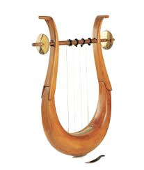
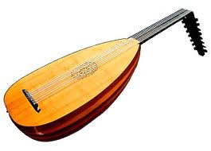

Er zijn verschillende theorieën over het ontstaan van de gitaar, die wij nu kennen. De een beweert dat de gitaar afstamt van de kithara en de ander beweert dat het is ontstaan uit een lier. Sommige mensen geloven zelfs dat er een combinatie van beide theorieën heeft plaats gevonden. Omdat het vrij vaag is en er niet heel veel bronnen over te vinden zijn, citeer ik de tekst gevonden bij dit onderwerp van Wikipedia .
 
De voorganger van de gitaar was de kithara (gitara), een instrument dat gebruikt werd bij de oude Grieken. Hoe dat instrument in Spanje is geraakt is niet duidelijk. Mogelijk is een luit uit Mesopotamië naar dit land gebracht door de Moren, of een Romeinse citer, waar men dan een hals zou op hebben aangebracht. Het was geen gitaar zoals we ze nu kennen, maar ze had er wel zeer veel van weg. Het succes van zowel de Spaanse Vihuela da mano, zeskorig (zes dubbele snaren), als de Italiaanse renaissancegitaar, vierkorig (vier dubbele snaren), heeft bijgedragen tot de ontwikkeling van de guitarra española. Deze rijkelijk versierde en met vijf dubbele snaren bespannen barokgitaar is ontstaan in Spanje op het einde van de zestiende eeuw. Rond 1780 werd er nog een zesde paar snaren toegevoegd aan de guitarra española. De meeste zeskorige gitaren in Spanje werden gebouwd in Cádiz. Bijna gelijktijdig werden de zes koren ontdubbeld, eerst in Frankrijk en Italië, Spanje volgde pas veel later. Ook de snaarspanning werd verhoogd. Dit werd dan de zessnarige “romantische gitaar” genoemd, met haar typische snorvormige kam. In de negentiende eeuw werden er mechanische stemschroeven aan toegevoegd, en rond 1884 bouwde Antonio de Torres Jurado de eerste gitaar die qua vorm en bouwprincipes maar weinig meer verschilde van de 'klassieke gitaar' zoals wij die vandaag kennen. Niet alleen in Spanje maar in de meeste West-Europese landen werd dit instrument bespeeld in aristocratische kringen waar het overigens meer gewaardeerd werd dan in Spanje zelf. Gitaristen zoals Robert de Visée en Francesco Corbetta waren vast verbonden aan het hof van Lodewijk XIV. Hun muziekbundels werden opgedragen aan de koning die, evenals zijn dochters, ook zelf een fervent gitaarspeler was.